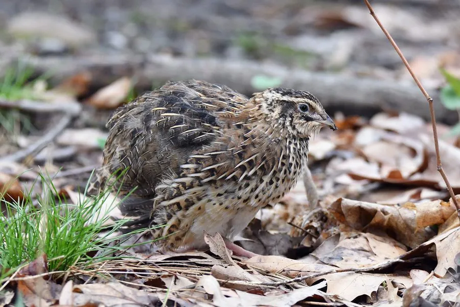

鸟类 · 动物界
日本鹌鹑 Coturnix japonica

体形小巧的候鸟型雉类，褐色羽衣上密布浅色纵纹，是人类驯化的重要禽类，蛋用和肉用品系遍布世界各地。
- 分类
- 门脊索动物门纲鸟纲目鸡形目科雉科属鹌鹑属
- 栖息环境
- 草原、农田、草甸和灌丛，迁徙时也出现在沿海湿地附近
- 地理分布
- 东亚，中国东北、内蒙古、朝鲜半岛和日本繁殖，冬季南迁至中国南方、东南亚和印度
- 保护级别
- IUCN 近危（NT）；中国“三有”保护动物
物种志
日本鹌鹑体长 16–20 cm，体重约 70–140 g，是体形最小的雉类之一。雌鸟体羽以褐色为主，背部密布浅色和黑色的纵纹，胸腹部颜色较浅，喉部白色；雄鸟的胸部和喉部为红褐色，脸部有白色斑纹，羽色比雌鸟更鲜艳。
日本鹌鹑在东亚繁殖，中国东北、内蒙古、朝鲜半岛和日本都有繁殖种群，冬季南迁到中国南方、东南亚和印度越冬。它们栖息在草原、农田、草甸和灌木丛，主要吃草籽、谷物和昆虫。日本鹌鹑是重要的驯化禽类，人类饲养历史超过千年，形成了蛋用和肉用两大类品系，全球年产量巨大。野生种群因农田开垦和过度狩猎而下降，目前被列为近危物种，中国将其列入“三有”保护名录。
形态与习性
- 食性草籽、谷物和昆虫
- 体长16–20 cm
- 体重约 70–140 g
- 繁殖每窝 6–12 枚卵，孵化约 17–18 天
- 寿命野外约 2–3 年
- 驯化蛋用和肉用两大品系，全球广泛饲养
- 迁徙冬季南迁至中国南方、东南亚和印度
趣味知识
- 日本鹌鹑是人类驯化历史超过千年的禽类，蛋用和肉用品系遍布世界。
- 野生日本鹌鹑是候鸟，冬季会南迁到东南亚和印度越冬。
- 雌鸟羽色以褐色纵纹为主，雄鸟的胸喉部呈红褐色。
- 鹌鹑蛋是常见的食品，营养丰富，被称为“动物人参”。